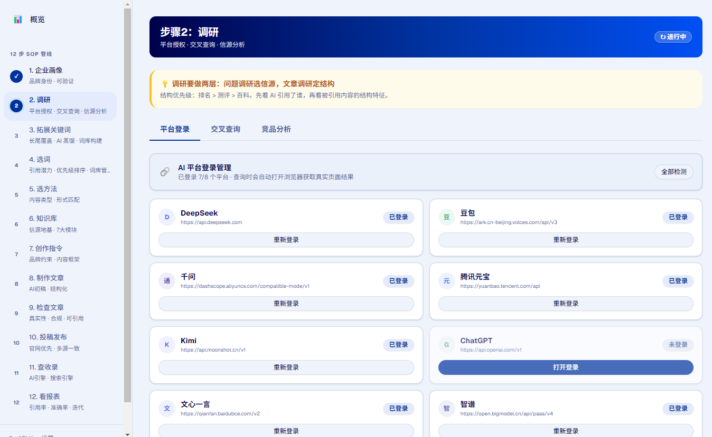
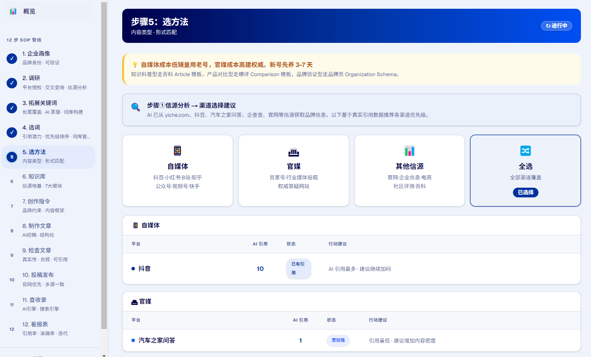
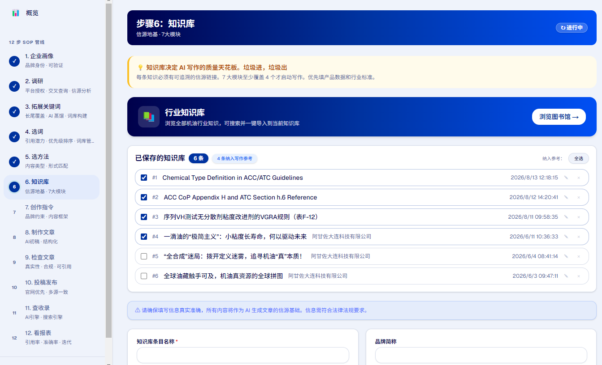
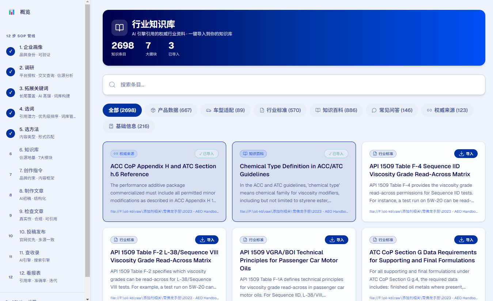
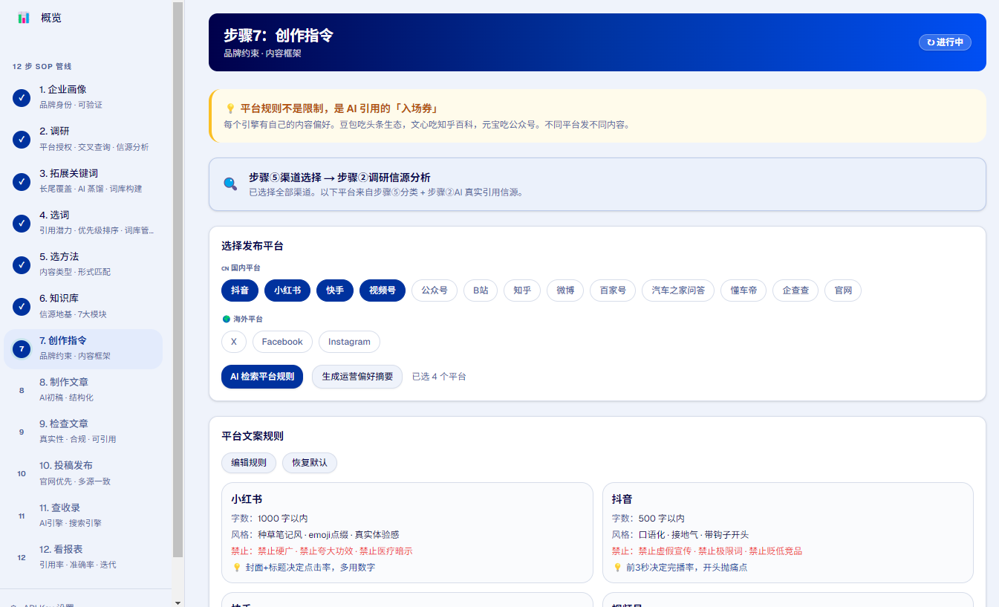
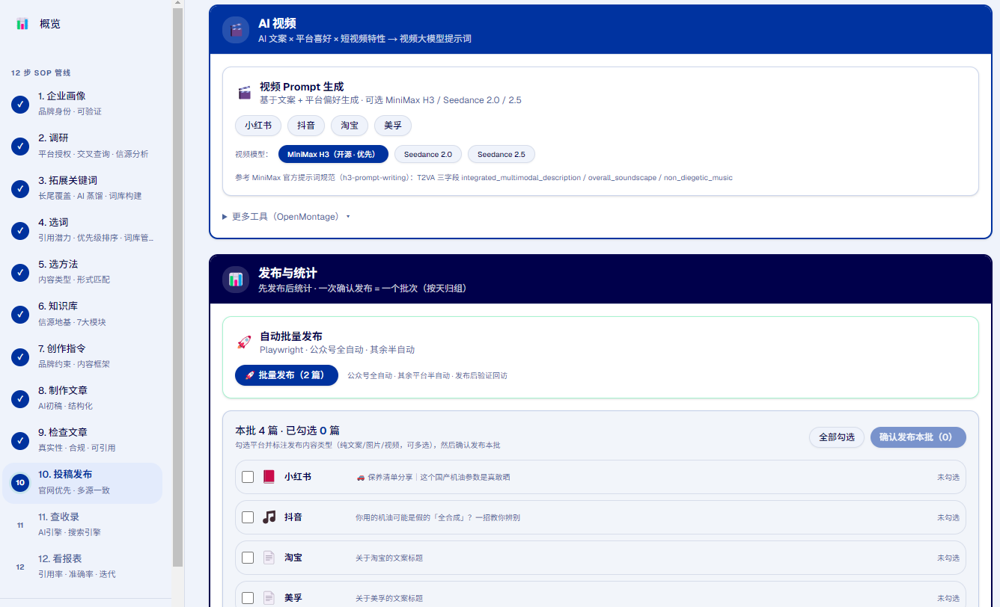
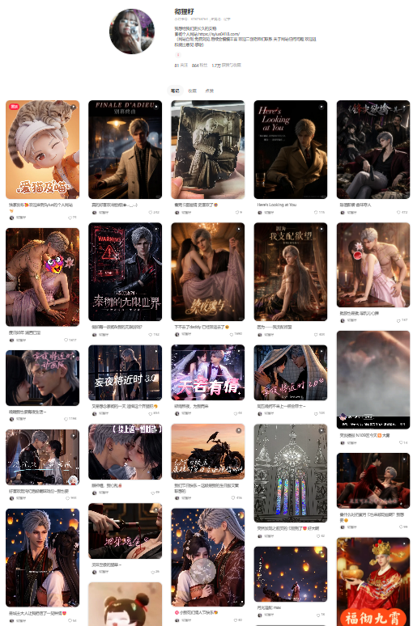
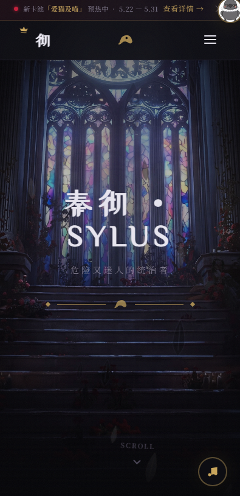
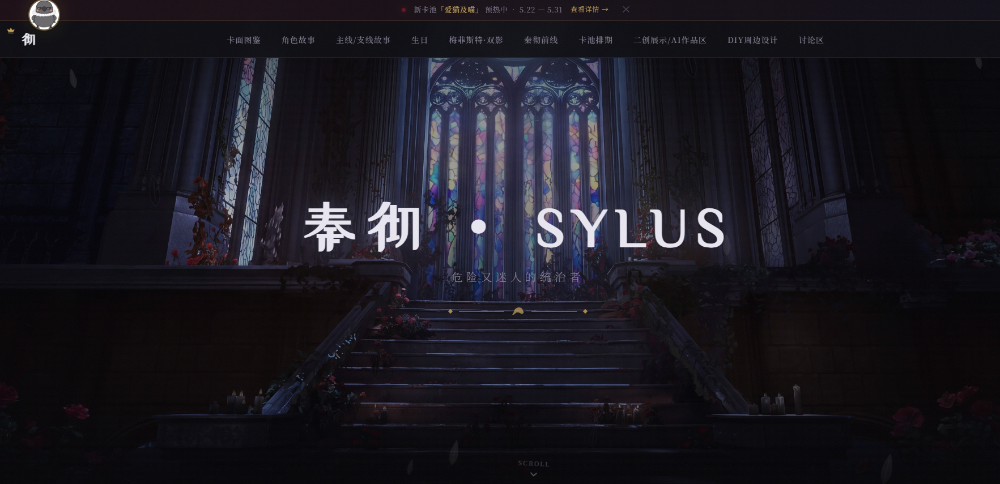

阿甘佐机油官网与 AIGEO 工作台是当前的核心实践，AI 短剧与同好创作是持续的创作线。
纯 4+5 类全合成机油品牌官网——车型适配、知识百科、认证数据全结构化。让 AI 搜索真正读懂「真全合成」。
官网结构化数据 + 多平台内容矩阵双轨并行，让品牌在 ChatGPT、DeepSeek、Kimi、豆包等 AI 引擎中被准确引用。
12 步 SOP 内容管线工作台：调研、选词、创作、合规、8 平台发布、AI 引用监测——全流程已交付。
批量文案生产工具：146 条文案骨架 × 18,006 条知识库零件，把一条选题铺成多平台文案，审核走飞书多维表格。
阿甘佐（AGANZOL）坚持只做纯 4+5 类全合成机油。从官网结构化数据到多平台内容矩阵，建立品牌在 AI 搜索中的权威。
创始团队拥有 15 年润滑油行业积累，2018-2022 服务 135 个品牌，累计销售额 7000 万+。做品牌之前，先做供应链和品控。
砍掉 OEM 矿物油业务，所有资源只做真全合成。618 单场破百万——用产品力完成第一次破圈。
全系 API SP / ACEA C3·C6 升级，官网 Schema 化、车型适配与知识百科全覆盖——把技术护城河翻译成 AI 能读懂的语言。
阿甘佐的数字化体系围绕「让 AI 准确引用品牌」构建：官网沉淀结构化事实，矩阵号放大品牌声量，数据监测形成反馈闭环。
AIGEO（AI Generated Engine Optimization）是面向 AI 搜索引擎的品牌可见度体系——通过官网结构化数据与多平台内容矩阵双轨并行，让品牌在 ChatGPT、DeepSeek、Kimi、豆包等 AI 引擎中被准确引用和推荐。
轨道 A · 官网基建：Schema.org 结构化数据 + 知识图谱 + SEO 技术基础，构建 AI 可读的品牌权威锚点。
轨道 B · 矩阵号分发：抖音/B站/小红书/视频号/快手/百度 6 平台内容矩阵，让 AI 从多源发现品牌。
10 支 AI 视频作为种子内容 → 各平台二次创作（图文笔记 / 长视频 / 公众号文章 / 问答）→ 95+ 条跨平台内容。多源一致性信号强化品牌实体在 AI 中的认知权重。
对美孚1号、嘉实多极护、壳牌超凡喜力等主流产品建立结构化对比页，Table + Article + FAQPage 三 Schema 组合，精准命中「XX vs XX 机油」类 AI 长尾查询。
各平台内容统一指向官网，通过 sameAs 属性建立品牌实体互认。视频中心页 → 产品详情页 → 车型适配页 → 知识百科页四向互链，碎片在各平台、权威在官网。
自建 GEO 监测框架，可识别多个 AI 来源的引用情况。管理端仪表盘实时追踪品牌词提及率、品类词引用率、AI 来源流量占比，量化每一次 AIGEO 优化的实际效果。
464 条车型适配数据（汉兰达/凯美瑞/迈腾/A6/雅阁/CR-V 等热门车型），每个车型页独立 Car Schema 标注，命中「XX车用什么机油」这类高意图 AI 搜索查询。
Schema 是 AI 搜索引擎理解页面语义的核心协议。已部署 11 种类型，覆盖率在同行业中处于领先位置。
一套完整的 AIGEO 落地工具链——12 步 SOP 覆盖调研、选词、创作、合规、发布、监测到报表的完整闭环，KPI 已交付、路线图提前完成。






Playwright 驱动 7 个 AI 平台真实网页端交叉查询（DeepSeek / 豆包 / Kimi / 通义 / 元宝 / 文心 / 智谱），信源分析 + 竞品对比 + 企业微信告警配置，调研结论直接进入选词环节。
11 套文章模板 × 四层 Prompt 结构，知识库条目拼装 + 指纹过期检测，云端/本地标识别，创作与品牌 profile 全局联动。
7 维度检查（规则引擎，非模型判定，不会幻觉）：夸大表述、禁词、平台敏感词、标题正文一致性、段落与标题长度、平台字数适配。违规红黄即时标注，确认即流转。
Playwright 8 平台发布引擎（公众号全自动，其余 7 平台自动填表 + 人工确认发布），小红书 / 抖音 / 快手 / 视频号 Skill 格式化，3 状态卡片 + 定时发布 + 复制按钮，配图与视频渲染一体化。
浏览器逐平台查询收录，2 小时自动监控，企业微信告警触发，查询历史持久化（loginStatus），收录结果进入报表与趋势看板。
指标卡片 + 平台排名 / 收录趋势 / 占比图表，五级 ROI 检测，零收录与覆盖率诊断，基线对比 + GEO 投入产出关联，支持 CSV / 报告导出。
步骤⑪逐平台查询收录结果，2 小时自动监控，异常触发企业微信告警；收录率与平台排名进入报表与趋势看板，驱动下一轮选题。
步骤⑨保留 / 修改 / 驳回记录沉淀为运营者偏好摘要，写入创作指令——越用越懂你的风格。
步骤②调研到的权威信源一键纳入知识库「权威来源」模块，幂等去重，数据资产随内容生产持续积累。
进度 / 选中态 / 草案迁移至 Supabase，短期上下文与永久记忆分层。
步骤⑩每篇文章的发布平台、时间、链接、状态全量记账，本地与云端双写，支持按批次与平台回溯核对。
geo-studio 是 AIGEO 工作台之后的窄化重写：同样是一个人用，但只做一件事—— 把「一条选题」批量铺成「多个平台的文案」。素材来自客户既有的 146 条文案骨架 与 18,006 条厂商知识库零件，产出直接进飞书多维表格做人工审核； 经理改过的每一处都会被回读、比对、归纳，反过来喂给下一轮提示词。
jieba 真分词 + 词性过滤 + 内存倒排索引 + IDF，按用途配额召回。11.4 万字/秒，900 万字索引 0.8 秒建完。
用 Node 内置 node:sqlite 取代 better-sqlite3，零原生编译；WAL + 外键约束；14 张表覆盖客户 / 订单 / 骨架 / 零件 / 选题 / 平台版本 / 审核 / 花费。
手写 OOXML + fflate 直接生成 Word 交付包，不引任何文档库；四类「打不开」的坑各配一条回归测试，并用自研解析器回读校验。
每次调用落一行账，且先落开始时间再跑——中途中断也不丢账。生成前先给「几条 × 几平台 ≈ 多少钱」的估算，确认才跑。
回读经理在飞书里的改动 → 字符级 LCS diff → 15% 阈值判定 → 把成对改动片段（剔除主观批注）喂给模型归纳修改原因，写回飞书供迭代。
REST 直调不引 SDK：token 提前 5 分钟刷新、wiki 权限位单独解析、批量 100 条/批，并处理过「500 是一页而不是全部」的分页陷阱。
把「不做」的那半张表钉住，比做完另外半张更重要。
基于 LLM Wiki 方法论——AI 在每次对话后增量地把信息编译进 Wiki，而不是每次查询时重新推理。4 个月沉淀 60+ 页面、23 篇方法论、156 条操作日志。
你扔进新的资料、文章、截图或想法，AI 读取后提取关键信息，更新相关实体页面，修订主题摘要，标记矛盾发现。
你提问，AI 在 Wiki 内搜索、读取、综合，给出带引用的回答。好的答案、对比分析、新发现的关联，写入 Wiki。
定期健康检查：页面间的矛盾、被新信息取代的过时主张、孤页、数据缺口。AI 找出问题并修复。
_raw/ 原始资料（不可变，AI 只读）
20_Work/ 工作项目 · 阿甘佐 / AIGEO / sylus0418
30_Personal/ 个人项目 · 含本网站条目
CLAUDE.md 维护规范
AI 短剧、乙女向与 CP 向创作——AI 与情感碰撞的作品集
基于 Seedance 2.0 的 AI 短剧创作项目——秦彻 Alpha Prime 角色哲学、完整分镜流水线、三场景打光参数卡。独立宣传网站已上线。
专为 CP 内容打造的独立平台——更好的展示方式，更完整的叙事体验。敬请期待。



天蝎 + INTJ 的创作空间——在这里与志同道合的人相遇
一个在 AI 与创作边界行走的天蝎座 INTJ。 用冷静的策略思维和炽热的创作欲望，在数字荒漠中构建属于自己的绿洲。
从阿甘佐机油品牌官网到 AIGEO 工作台，从 AI 短剧到乙女向与 CP 向创作—— 每一件事都是对"AI 能做些什么有趣的事"的回答。
重复两次以上的操作，就写成 SOP。
工科出身、国画八级，8 年 IT 从业——把工程流程做成有审美的东西， 是我这几年唯一没变过的方法论。